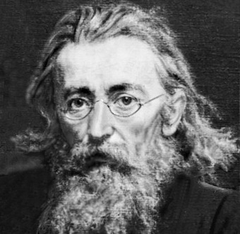

Jan Matejko |
||
NAWIGACJA |
130. rocznica śmierci Jana Matejko, (1838-1893) 1 listopada.Wybitny twórca, malarz - konsekwentnie realizował misję artysty i prezentował postawę obywatelskiej służby narodowi. Jego celem było tamże. Rocznice, patroni roku 2023-24 ukazanie w dziełach sztuki przyczyn upadku I Rzeczypospolitej oraz przypomnienie jej chlubnej przeszłości i dawnej potęgi. W ten sposób przekonywał Polaków żyjących pod zaborami o wartości ich kulturowego dziedzictwa i podtrzymywał dążenia do odzyskania niepodległości. Namalował ponad 300 obrazów (m.in. „Unia lubelska”, „Stefan Batory pod Pskowem”, „Bitwa pod Grunwaldem”, „Hołd pruski”, „Jan Sobieski pod Wiedniem”, „Wernyhora”, „Kościuszko pod Racławicami”, „Konstytucja 3 Maja 1791 roku”). Jednym z ostatnich jego dzieł był „Poczet królów i książąt polskich”. |

Jan Matejko |
|
||